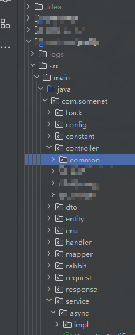
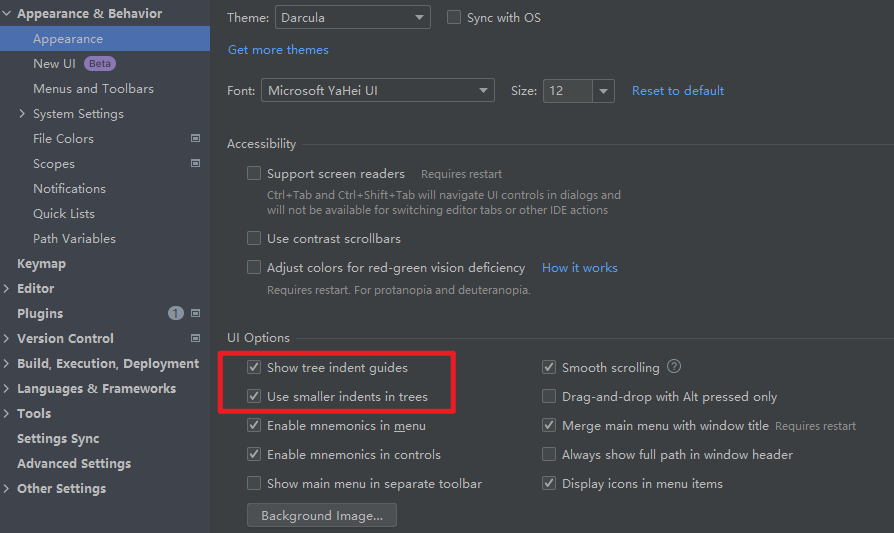

目录缩进
java开发应该都小的, 有时候一个项目的层级非常多, 由于缩进太大, 目录还需要左右拖动
效果


设置


插件
个人工作中常用的插件
.ignore: 都懂, 就是隐藏ignore的文件夹
alibaba java coding: 阿里巴巴的规范手册
easy javadoc: 快速生成javadoc模板
maven helper: maven冲突解决
mybatis log: mybatis框架的完整sql语句输出(注意当连续大量的数据导入型sql的时候, 把它关闭 记一次idea SQL日志打印过多卡死问题)
MybatisCodeHelperPro: mybatis跳转工具/代码生成
pojo to json: 测试接口的时候根据实体类生成json数据
rainbow brackets: 括号对
restfultool: 快速查找对外接口(现在idea内置的也可以对外接口, 不过干扰项比较多)
restful fast request: 快速查找对外接口, 并且可以测试请求, 小型postman
translation: 翻译
nginx configuration pro: nginx配置代码提示
代码编辑界面左侧图标
有时候在代码编辑界面, 左侧图标一行可能会有三四个, 可以通过配置将一些不重要的图标去掉


可以全部禁用, 也可以选择一些禁用